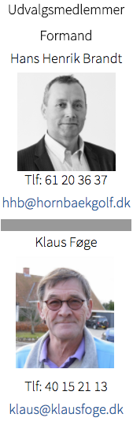
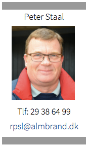
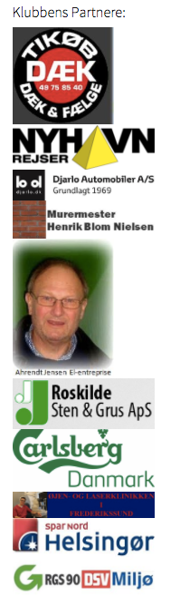

<div class="pages">
  <div data-page="sponsorer" class="page navbar-fixed toolbar-fixed" >
    <div class="navbar">
      <div class="navbar-inner">
        <div class="left">
          <a href="#" class="link back icon-only"><i class="icon icon-back"></i></a>
          <!-- <a href="#" class="back link icon-only"><i class="icon icon-back"></i></a> -->
        </div>
        <div class="center">Sponsorudvalget</div>
        <!-- <div class="right"></div> -->
        <div class="right">
        </div>
      </div>
    </div>
    <div class="page-content" style="padding-top:45px;">
       <div class="content-block">
          <p>I Hornbæk Golfklub er indtægter fra sponsorering af klubbens faciliteter og aktiviteter et betydeligt bidrag til klubbens økonomi.
          <br /><br /> 
          For at tiltrække og fastholde sponsorer er det sponsorudvalgets opgave at definere de sponsor-ydelser, der tilbydes, og som tilfører værdi til sponsorerne. Udvalget definerer det nærmere indhold og vilkår for de enkelte sponsorater til godkendelse i bestyrelsen f.eks.:<br /><br />
          • Hulsponsorater<br />
          • Bænke<br />
          • Holdsponsorater<br />
          • Træningsarealer og bygninger<br />
          • Matcher<br />
          • Tavler, hjemmeside osv.<br />
          • Hotel-partnere<br />
          <br />
          Udvalgets medlemmer varetager den generelle kontakt til eksisterende sponsorer og iværksætter de fornødne aktiviteter for at tiltrække nye sponsorer. Specielle løsninger og behov vurderes i samarbejde med relevante udvalg og funktioner. Udvalget tilrettelægger i samarbejde med andre udvalg de besluttede sponsoraktiviteter.
          <br /><br />
          Seneste referat kan downloades <a href="http://hornbaekgolf.dk/images/Markeds.Partner_udv._24.marts.2015.pdf" class="external" download>her</a><br />
          Referat fra februar  kan downloades <a href="http://hornbaekgolf.dk/images/5VM4bMsbCc0pvcE2vQ3dYoKSTHXMxb5bHI48vPq63tPnUSZ0OoFNFHFQmplvS4HE.pdf" class="external" download>her</a><br />
          Referat fra januar kan downloades <a href="http://hornbaekgolf.dk/images/Referat_Sp.MA_m%C3%B8de_5.januar_2015.pdf" class="external" download>her</a></p>
          
          
          
        </div>
    </div>
    </div>
    </div>
  </div>
</div>
